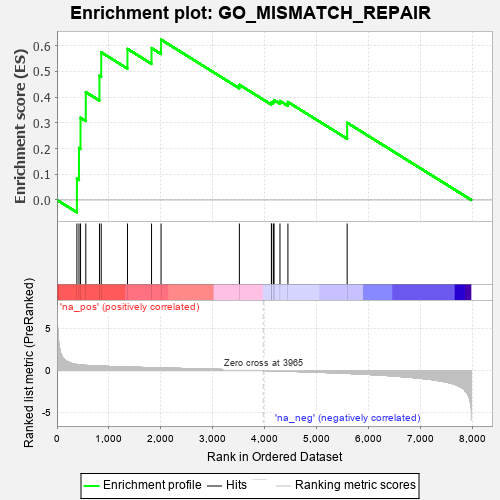

| | | Dataset | 7d |
| Phenotype | NoPhenotypeAvailable |
| Upregulated in class | na_pos |
| GeneSet | GO_MISMATCH_REPAIR |
| Enrichment Score (ES) | 0.62325877 |
| Normalized Enrichment Score (NES) | 1.7174224 |
| Nominal p-value | 0.010380623 |
| FDR q-value | 0.16154589 |
| FWER p-Value | 0.98 |
Table: GSEA Results Summary

Fig 1: Enrichment plot: GO_MISMATCH_REPAIR
Profile of the Running ES Score & Positions of GeneSet Members on the Rank Ordered List
| PROBE | GENE SYMBOL | GENE_TITLE | RANK IN GENE LIST | RANK METRIC SCORE | RUNNING ES | CORE ENRICHMENT | | 1 | AXIN2 | | | 383 | 0.713 | 0.0826 | Yes |
| 2 | MLH1 | | | 423 | 0.679 | 0.2022 | Yes |
| 3 | ERCC1 | | | 453 | 0.660 | 0.3196 | Yes |
| 4 | MSH5 | | | 554 | 0.612 | 0.4193 | Yes |
| 5 | RPA1 | | | 817 | 0.527 | 0.4829 | Yes |
| 6 | RPA2 | | | 851 | 0.519 | 0.5740 | Yes |
| 7 | PMS1 | | | 1356 | 0.418 | 0.5872 | Yes |
| 8 | MSH2 | | | 1819 | 0.334 | 0.5903 | Yes |
| 9 | EXO1 | | | 2002 | 0.304 | 0.6233 | Yes |
| 10 | XPC | | | 3509 | 0.076 | 0.4479 | No |
| 11 | ABL1 | | | 4125 | -0.027 | 0.3755 | No |
| 12 | MSH6 | | | 4129 | -0.028 | 0.3803 | No |
| 13 | MCM9 | | | 4163 | -0.036 | 0.3827 | No |
| 14 | MSH4 | | | 4176 | -0.038 | 0.3882 | No |
| 15 | TDG | | | 4290 | -0.058 | 0.3847 | No |
| 16 | SETD2 | | | 4443 | -0.084 | 0.3810 | No |
| 17 | PMS2 | | | 5583 | -0.340 | 0.3002 | No |
Table: GSEA details [plain text format]
Fig 2: GO_MISMATCH_REPAIR: Random ES distribution
Gene set null distribution of ES for GO_MISMATCH_REPAIR